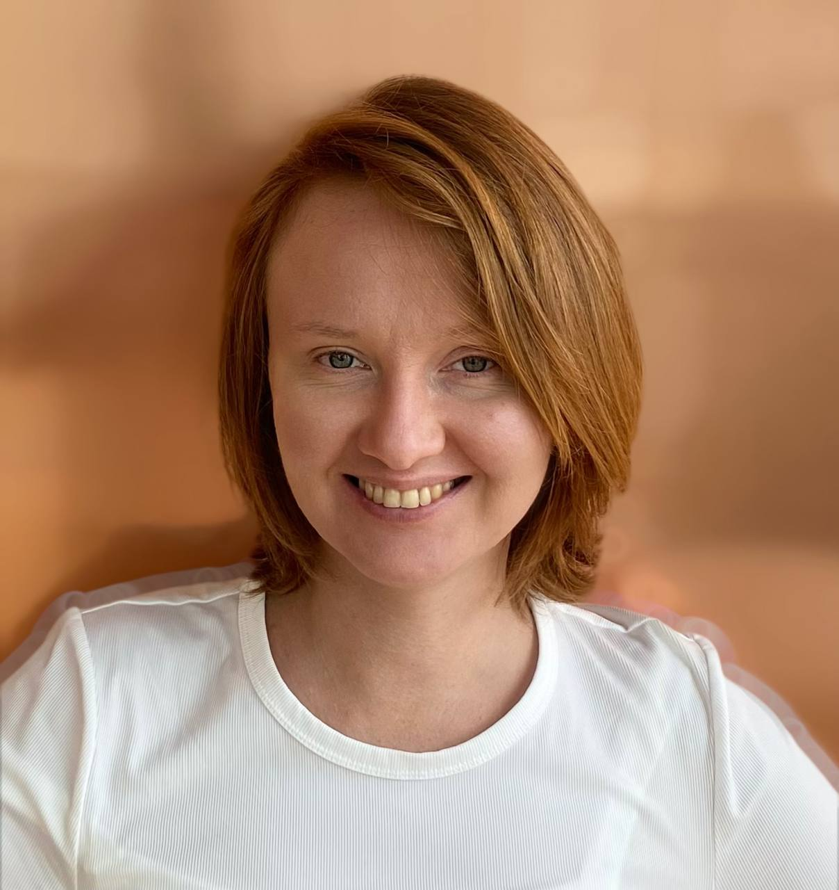

Таисия Константинова
Редактор образовательных материалов
👉 antinomiyaya@gmail.com
Технические навыки
Начальный уровень: Python, JavaScript, HTML
Начальный уровень: Articulate360
Средний уровень: Adobe Photoshop, Canva,iMovie
Средний уровень: Mailchimp, UniSender
Опыт работы
Учитель по философии для детей, Bilingvi - школа русского языка в Сингапуре
Январь 2023 — Август 2023
Проводила занятия для детей-билингвов 8-11 лет по философии и критическому мышлению.
- Создавала планы уроков, ориентированные на развитие критического мышления и умения аргументированно выражать свою точку зрения;
- Фасилитировала дискуссии на занятиях с целью создать вовлекающее и безопасное пространство для диалога;
- Подготваливала и отправляла отчеты о проведенных занятиях родителям.
Коммьюнити-менеджер в PRO Женщин, Рыбаков Фонд
Январь 2017 — Июль 2019
Я была частью команды, которая увеличила сообщество с 300 участников в Москве до 10,000 участниц по всему миру.
- Вела социальные сети и сайт сообщества, в том числе писала статьи для СМИ;
- Создавала материалы для онбординга новых участниц в сообщество, такие как «Настольная книга лидера», в которой объяснялись роли в сообществе, как проводить встречи и искать единомышленниц.;
- Отвечала за общение с сообществом, поддерживала создание местных сообществ и помогала местным лидерам;
- Работала над развитием платформы pro-women.ru с помощью подрядчиков;
- Организовала офлайн-мероприятия, такие как вечерние встречи для сообщества в Москве с приглашёнными гостями, а также первый лидерский форум PRO Женщин;
- Создавала и отправляла рассылку с помощью Mailchimp и UniSender.
Менеджер проекта, TeleTrade
Июнь 2014 — Декабрь 2016
Занималась продвижением бренда на YouTube и в социальных сетях.
- Вела страницы бренда в социальных сетях;
- Сотрудничала с блогерами для продвижения. Пример коллаборации - популярные блогеры озвучивали актуальные новости в формате ЭмоджиНовости;
- Управляла обновлениями и оформлением YouTube-канала;
- Оптимизировала социальные сети для повышения видимости и вовлеченности.